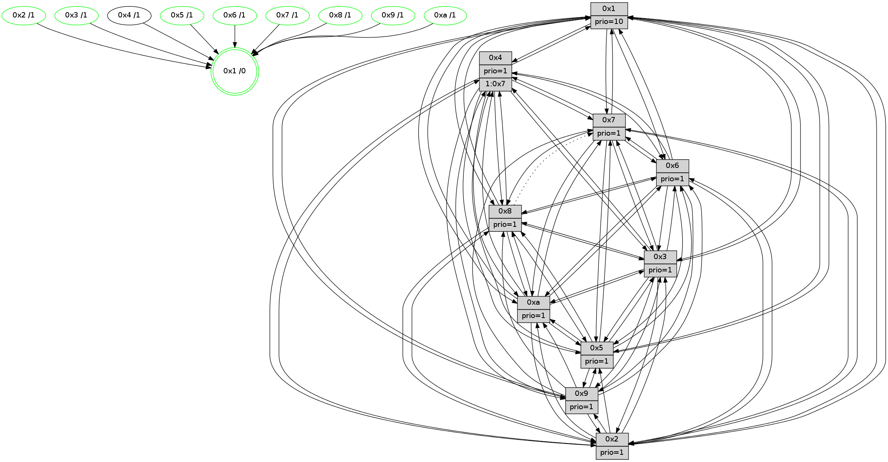

>> << IDX [start] -100 -25 -5 +0 +5 +25 +100 [930.423148155]
 Previous packets
925.009622 [Hello(4): seq=591 sym=5,7,6,2,3,9,8,10,1 sysInfo= stat=5:4,4,11,10/7:11,14,13,6/6:1,8,9,9/2:5,2,5,9/3:11,0,7,7/9:10,8,15,6/8:7,7,1,1/10:14,14,1,9/1:13,11,12,1]
925.012344 [Hello(8): seq=535 sym=5,2,3,4,9,6,10,1 sysInfo=hasWarning stat=5:6,15,0,11/2:5,10,11,4/3:8,11,10,11/4:9,2,9,6/9:10,13,5,0/6:9,14,8,10/10:12,15,2,0/1:11,1,9,0]
925.015031 [Color(1) seq=272 @0:0 prio=10]
925.016317 [Hello(9): seq=535 sym=2,5,3,4,7,6,8,10,1 sysInfo=hasWarning stat=2:4,1,11,2/5:6,1,8,2/3:3,4,7,11/4:9,6,5,6/7:2,7,12,8/6:4,14,0,8/8:1,12,13,1/10:4,8,1,1/1:14,13,13,1]
925.020118 [Color(9) seq=240 @0:0 prio=1]
925.021897 [Color(8) seq=236 @0:0 prio=1]
925.023173 [Color(3) seq=232 @0:0 prio=1]
925.025412 [Hello(7): seq=591 sym=2,3,5,6,4,9,10,1 sysInfo=hasWarning stat=2:2,10,7,12/3:1,7,14,11/5:4,10,3,14/6:0,5,15,6/4:4,6,13,0/9:8,0,6,1/10:12,3,3,1/1:3,7,10,0]
925.028094 [Color(7) seq=186 @0:0 prio=1]
925.035145 [Hello(10): seq=524 sym=6,2,3,8,9,5,4,1 sysInfo=hasWarning stat=6:6,0,13,4/2:12,10,10,4/3:5,13,5,7/8:8,4,2,0/9:10,12,11,2/5:9,12,15,11/4:2,6,2,6/1:6,11,13,1]
925.038160 [Color(10) seq=212 @0:0 prio=1]
----------------------------------------------------------------------
925.694356 beacon01(faad) #0 coord=01,02,03,04,05,06,07,0a,09,08 cycle=688.0ms assoc
-- color-indic=1 64 7b 40
925.704339 beacon02(faad) #0 coord=01,02,03,04,05,06,07,0a,09,08 cycle=688.0ms assoc 64 e8 71
925.714338 beacon03(faad) #0 coord=01,02,03,04,05,06,07,0a,09,08 cycle=688.0ms assoc 64 92 3c
925.724339 beacon04(faad) #0 coord=01,02,03,04,05,06,07,0a,09,08 cycle=688.0ms assoc 64 e5 d6
925.734338 beacon05(faad) #0 coord=01,02,03,04,05,06,07,0a,09,08 cycle=688.0ms assoc 64 9f 9b
925.744338 beacon06(faad) #0 coord=01,02,03,04,05,06,07,0a,09,08 cycle=688.0ms assoc 64 11 4c
925.754340 beacon07(faad) #0 coord=01,02,03,04,05,06,07,0a,09,08 cycle=688.0ms assoc 64 6b 01
925.764344 beacon0a(faad) #0 coord=01,02,03,04,05,06,07,0a,09,08 cycle=688.0ms assoc 64 1a 0a
925.774344 beacon09(faad) #0 coord=01,02,03,04,05,06,07,0a,09,08 cycle=688.0ms assoc 64 94 dd
925.784345 beacon08(faad) #0 coord=01,02,03,04,05,06,07,0a,09,08 cycle=688.0ms assoc 64 ee 90
925.796895 [Hello(1): seq=501 sym=4,2,9,5,10,3,8,6,7 sysInfo=coloring-mode-on,ColoringModeRequestCalled stat=4:1,1,13,0/2:1,1,11,11/9:2,14,11,4/5:13,15,3,4/10:6,0,7,2/3:6,9,7,2/8:7,9,5,0/6:1,15,8,10/7:1,13,11,11]
925.800589 [Hello(2): seq=588 sym=4,5,7,6,3,9,8,10,1 sysInfo=hasWarning stat=4:13,12,3,5/5:5,8,4,0/7:12,10,15,9/6:9,1,8,8/3:15,6,6,5/9:12,13,8,3/8:0,7,5,8/10:0,8,8,9/1:2,10,12,1]
925.804246 [Hello(5): seq=592 sym=7,6,4,3,1,9,8,10,2 sysInfo=hasWarning stat=7:7,10,15,8/6:10,13,10,10/4:5,12,13,6/3:1,12,5,9/1:6,12,13,1/9:15,1,10,3/8:2,3,9,8/10:2,5,4,4/2:9,4,6,1]
925.807083 [Color(5) seq=245 @0:0 prio=1]
925.809057 [Hello(6): seq=592 sym=2,3,5,4,7,9,8,10,1 sysInfo= stat=2:1,15,5,8/3:12,3,14,9/5:12,13,13,12/4:4,4,4,0/7:2,9,10,5/9:13,14,12,3/8:15,11,8,1/10:3,4,2,10/1:7,14,9,1]
925.812110 [Hello(3): seq=592 sym=1,7,6,2,4,8,9,10,5 sysInfo= stat=1:11,10,2,0/7:2,0,5,7/6:9,9,8,2/2:7,15,9,9/4:7,9,12,5/8:5,7,5,1/9:10,12,8,9/10:15,13,5,2/5:15,9,4,10]
925.817256 [Color(6) seq=224 @0:0 prio=1]
925.821735 [Color(2) seq=237 @0:0 prio=1]
----------------------------------------------------------------------
926.482487 beacon01(faad) #0 coord=01,02,03,04,05,06,07,0a,09,08 cycle=688.0ms assoc
-- color-indic=1 64 c7 45
926.492469 beacon02(faad) #0 coord=01,02,03,04,05,06,07,0a,09,08 cycle=688.0ms assoc 64 54 74
926.502469 beacon03(faad) #0 coord=01,02,03,04,05,06,07,0a,09,08 cycle=688.0ms assoc 64 2e 39
926.512472 beacon04(faad) #0 coord=01,02,03,04,05,06,07,0a,09,08 cycle=688.0ms assoc 64 59 d3
926.522470 beacon05(faad) #0 coord=01,02,03,04,05,06,07,0a,09,08 cycle=688.0ms assoc 64 23 9e
926.532470 beacon06(faad) #0 coord=01,02,03,04,05,06,07,0a,09,08 cycle=688.0ms assoc 64 ad 49
926.542470 beacon07(faad) #0 coord=01,02,03,04,05,06,07,0a,09,08 cycle=688.0ms assoc 64 d7 04
926.552476 beacon0a(faad) #0 coord=01,02,03,04,05,06,07,0a,09,08 cycle=688.0ms assoc 64 a6 0f
926.562475 beacon09(faad) #0 coord=01,02,03,04,05,06,07,0a,09,08 cycle=688.0ms assoc 64 28 d8
926.572475 beacon08(faad) #0 coord=01,02,03,04,05,06,07,0a,09,08 cycle=688.0ms assoc 64 52 95
926.583644 [Hello(4): seq=592 sym=5,7,6,2,3,9,8,10,1 sysInfo= stat=5:5,5,11,10/7:12,15,13,6/6:2,9,9,9/2:6,3,5,9/3:12,1,7,7/9:11,9,15,6/8:8,8,1,1/10:15,15,1,9/1:14,12,12,1]
926.587718 [Hello(8): seq=536 sym=5,2,3,4,6,10,1 asym=7 sysInfo=hasWarning stat=5:7,0,0,11/2:6,11,11,4/3:9,12,10,11/4:10,2,9,6/6:10,15,8,10/10:13,0,2,0/1:12,1,9,0/7:0,1,0,0]
926.590256 [Hello(9): seq=536 sym=2,5,3,4,7,6,8,10,1 sysInfo=hasWarning stat=2:5,2,11,2/5:7,2,8,2/3:4,5,7,11/4:10,6,5,6/7:3,8,12,8/6:5,15,0,8/8:1,13,13,1/10:5,9,1,1/1:15,13,13,1]
926.592939 [Color(1) seq=273 @0:0 prio=10]
926.594674 [Color(9) seq=241 @0:0 prio=1]
926.596492 [Color(8) seq=237 @0:0 prio=1]
926.598702 [Color(3) seq=233 @0:0 prio=1]
926.600238 [Hello(10): seq=525 sym=6,2,3,8,5,4,1 sysInfo=hasWarning stat=6:7,1,13,4/2:13,11,10,4/3:6,13,5,7/8:8,4,2,0/5:10,13,15,11/4:3,6,2,6/1:7,11,13,1]
926.603143 [Color(10) seq=213 @0:0 prio=1]
926.608651 [Hello(7): seq=592 sym=2,3,5,6,4,10,1 sysInfo=hasWarning stat=2:3,11,7,12/3:2,7,14,11/5:5,11,3,14/6:1,6,15,6/4:5,6,13,0/10:13,4,3,1/1:4,7,10,0]
926.613472 [Color(7) seq=187 @0:0 prio=1]
----------------------------------------------------------------------
927.270619 beacon01(faad) #0 coord=01,02,03,04,05,06,07,0a,09,08 cycle=688.0ms assoc
-- color-indic=1 64 03 4b
927.280602 beacon02(faad) #0 coord=01,02,03,04,05,06,07,0a,09,08 cycle=688.0ms assoc 64 90 7a
927.290602 beacon03(faad) #0 coord=01,02,03,04,05,06,07,0a,09,08 cycle=688.0ms assoc 64 ea 37
927.300601 beacon04(faad) #0 coord=01,02,03,04,05,06,07,0a,09,08 cycle=688.0ms assoc 64 9d dd
927.310601 beacon05(faad) #0 coord=01,02,03,04,05,06,07,0a,09,08 cycle=688.0ms assoc 64 e7 90
927.320604 beacon06(faad) #0 coord=01,02,03,04,05,06,07,0a,09,08 cycle=688.0ms assoc 64 69 47
927.330603 beacon07(faad) #0 coord=01,02,03,04,05,06,07,0a,09,08 cycle=688.0ms assoc 64 13 0a
927.340606 beacon0a(faad) #0 coord=01,02,03,04,05,06,07,0a,09,08 cycle=688.0ms assoc 64 62 01
927.350606 beacon09(faad) #0 coord=01,02,03,04,05,06,07,0a,09,08 cycle=688.0ms assoc 64 ec d6
927.360607 beacon08(faad) #0 coord=01,02,03,04,05,06,07,0a,09,08 cycle=688.0ms assoc 64 96 9b
927.372167 [Hello(1): seq=502 sym=4,2,9,5,10,3,8,6,7 sysInfo=coloring-mode-on,ColoringModeRequestCalled stat=4:2,1,13,0/2:2,2,11,11/9:2,15,11,4/5:14,0,3,4/10:7,1,7,2/3:7,10,7,2/8:7,10,5,0/6:2,0,8,10/7:2,14,11,11]
927.375477 [Hello(3): seq=593 sym=1,7,6,2,4,8,9,10,5 sysInfo= stat=1:11,10,2,0/7:3,1,5,7/6:9,10,8,2/2:7,0,9,9/4:8,9,12,5/8:5,7,5,1/9:10,12,8,9/10:0,14,5,2/5:15,9,4,10]
927.378509 [Hello(5): seq=593 sym=7,6,4,3,1,9,8,10,2 sysInfo=hasWarning stat=7:8,11,15,8/6:11,14,10,10/4:6,12,13,6/3:2,13,5,9/1:7,13,13,1/9:0,2,10,3/8:3,4,9,8/10:3,6,4,4/2:9,5,6,1]
927.381219 [Hello(6): seq=593 sym=2,3,5,4,7,9,8,10,1 sysInfo= stat=2:1,0,5,8/3:12,4,14,9/5:12,13,13,12/4:5,4,4,0/7:3,10,10,5/9:14,15,12,3/8:0,12,8,1/10:4,5,2,10/1:8,15,9,1]
927.384218 [STC(1) #0.120 tree-change,inconsistent-stability,stable,to-color d=0]
927.386411 [Color(6) seq=225 @0:0 prio=1]
927.388381 [Hello(2): seq=589 sym=4,5,7,6,3,9,8,10,1 sysInfo=hasWarning stat=4:14,12,3,5/5:5,8,4,0/7:13,11,15,9/6:9,1,8,8/3:15,7,6,5/9:13,14,8,3/8:1,8,5,8/10:1,9,8,9/1:3,11,12,1]
927.392475 [Color(2) seq=238 @0:0 prio=1]
927.398394 [Color(5) seq=246 @0:0 prio=1]
----------------------------------------------------------------------
928.058750 beacon01(faad) #0 coord=01,02,03,04,05,06,07,0a,09,08 cycle=688.0ms assoc
-- color-indic=1 64 bf 4e
928.068734 beacon02(faad) #0 coord=01,02,03,04,05,06,07,0a,09,08 cycle=688.0ms assoc 64 2c 7f
928.078732 beacon03(faad) #0 coord=01,02,03,04,05,06,07,0a,09,08 cycle=688.0ms assoc 64 56 32
928.088734 beacon04(faad) #0 coord=01,02,03,04,05,06,07,0a,09,08 cycle=688.0ms assoc 64 21 d8
928.098734 beacon05(faad) #0 coord=01,02,03,04,05,06,07,0a,09,08 cycle=688.0ms assoc 64 5b 95
928.108734 beacon06(faad) #0 coord=01,02,03,04,05,06,07,0a,09,08 cycle=688.0ms assoc 64 d5 42
928.118734 beacon07(faad) #0 coord=01,02,03,04,05,06,07,0a,09,08 cycle=688.0ms assoc 64 af 0f
928.128738 beacon0a(faad) #0 coord=01,02,03,04,05,06,07,0a,09,08 cycle=688.0ms assoc 64 de 04
928.138738 beacon09(faad) #0 coord=01,02,03,04,05,06,07,0a,09,08 cycle=688.0ms assoc 64 50 d3
928.148740 beacon08(faad) #0 coord=01,02,03,04,05,06,07,0a,09,08 cycle=688.0ms assoc 64 2a 9e
928.160452 [Hello(4): seq=593 sym=5,7,6,2,3,9,8,10,1 sysInfo= stat=5:6,6,11,10/7:13,0,13,6/6:3,10,9,9/2:7,4,5,9/3:13,2,7,7/9:12,10,15,6/8:9,9,1,1/10:0,0,1,9/1:15,13,13,1]
928.163910 [STC(4)->1 #0.120 tree-change,inconsistent-stability,to-color d=1]
928.165828 [Hello(7): seq=593 sym=2,3,5,6,4,10,1 sysInfo=hasWarning stat=2:4,12,7,12/3:3,7,14,11/5:6,12,3,14/6:2,7,15,6/4:6,6,13,0/10:13,4,3,1/1:5,7,11,0]
928.168732 [STC(7)->1 #0.120 tree-change,inconsistent-stability,stable,to-color d=1]
928.170945 [Hello(9): seq=537 sym=2,5,3,4,7,6,8,10,1 sysInfo=hasWarning stat=2:6,3,11,2/5:8,3,8,2/3:5,6,7,11/4:11,6,5,6/7:4,9,12,8/6:6,0,0,8/8:1,14,13,1/10:6,10,1,1/1:0,13,14,1]
928.173780 [STC(9)->1 #0.120 tree-change,inconsistent-stability,stable,to-color d=1]
928.175611 [STC(3)->1 #0.120 tree-change,inconsistent-stability,stable,to-color d=1]
928.176887 [Color(7) seq=188 @0:0 prio=1]
928.178239 [Hello(8): seq=537 sym=5,2,3,4,6,10,1 asym=7 sysInfo=hasWarning stat=5:8,1,0,11/2:7,12,11,4/3:10,13,10,11/4:11,2,9,6/6:11,0,8,10/10:14,1,2,0/1:13,1,10,0/7:1,2,0,0]
928.183251 [STC(8)->1 #0.120 tree-change,inconsistent-stability,stable,to-color d=1]
928.185662 [Color(3) seq=234 @0:0 prio=1]
928.186960 [Color(8) seq=238 @0:0 prio=1]
928.189590 [Hello(10): seq=526 sym=6,2,3,8,7,5,4,1 sysInfo=hasWarning stat=6:8,2,13,4/2:14,12,10,4/3:7,13,5,7/8:8,4,2,0/7:0,1,0,0/5:11,14,15,11/4:4,6,2,6/1:8,11,14,1]
928.193901 [STC(10)->1 #0.120 tree-change,inconsistent-stability,stable,to-color d=1]
928.195881 [TreeStatus(9)-.->1 #0.120 tree-change,inconsistent-stability,stable child=1]
928.197771 [Color(10) seq=214 @0:0 prio=1]
928.199008 [Color(9) seq=242 @0:0 prio=1]
----------------------------------------------------------------------
928.846882 beacon01(faad) #0 coord=01,02,03,04,05,06,07,0a,09,08 cycle=688.0ms assoc
-- color-indic=1 64 8b 56
928.856864 beacon02(faad) #0 coord=01,02,03,04,05,06,07,0a,09,08 cycle=688.0ms assoc 64 18 67
928.866863 beacon03(faad) #0 coord=01,02,03,04,05,06,07,0a,09,08 cycle=688.0ms assoc 64 62 2a
928.876864 beacon04(faad) #0 coord=01,02,03,04,05,06,07,0a,09,08 cycle=688.0ms assoc 64 15 c0
928.886864 beacon05(faad) #0 coord=01,02,03,04,05,06,07,0a,09,08 cycle=688.0ms assoc 64 6f 8d
928.896864 beacon06(faad) #0 coord=01,02,03,04,05,06,07,0a,09,08 cycle=688.0ms assoc 64 e1 5a
928.906865 beacon07(faad) #0 coord=01,02,03,04,05,06,07,0a,09,08 cycle=688.0ms assoc 64 9b 17
928.916868 beacon0a(faad) #0 coord=01,02,03,04,05,06,07,0a,09,08 cycle=688.0ms assoc 64 ea 1c
928.926870 beacon09(faad) #0 coord=01,02,03,04,05,06,07,0a,09,08 cycle=688.0ms assoc 64 64 cb
928.936871 beacon08(faad) #0 coord=01,02,03,04,05,06,07,0a,09,08 cycle=688.0ms assoc 64 1e 86
928.949737 [Hello(1): seq=503 sym=4,2,9,5,10,3,8,6,7 sysInfo=coloring-mode-on,ColoringModeRequestCalled stat=4:3,1,13,0/2:3,3,11,11/9:3,0,12,5/5:14,1,3,4/10:8,2,8,2/3:7,11,8,2/8:8,11,6,0/6:2,1,8,10/7:3,15,12,11]
928.952371 [Hello(3): seq=594 sym=1,7,6,2,4,8,9,10,5 sysInfo= stat=1:11,10,3,0/7:3,2,5,7/6:10,11,8,2/2:8,1,9,9/4:9,9,12,5/8:5,8,5,1/9:10,13,8,10/10:1,15,6,2/5:0,10,4,10]
928.955798 [Hello(6): seq=594 sym=2,3,5,4,7,9,8,10,1 sysInfo= stat=2:2,1,5,8/3:13,5,15,9/5:12,14,13,12/4:6,4,4,0/7:4,11,11,5/9:15,0,13,4/8:1,13,9,1/10:5,6,3,10/1:9,0,9,1]
928.959262 [Color(6) seq=226 @0:0 prio=1]
928.962005 [Hello(2): seq=590 sym=4,5,7,6,3,9,8,10,1 sysInfo=hasWarning stat=4:15,12,4,5/5:5,9,4,0/7:14,12,0,9/6:9,1,8,8/3:0,8,7,5/9:14,15,9,4/8:2,9,6,8/10:2,10,9,9/1:4,11,12,1]
928.966727 [Color(2) seq=239 @0:0 prio=1]
928.969543 [Hello(5): seq=594 sym=7,6,4,3,1,9,8,10 sysInfo=hasWarning stat=7:9,12,0,8/6:11,14,10,10/4:7,12,14,6/3:3,14,6,9/1:8,13,13,1/9:1,3,11,4/8:4,5,10,8/10:4,7,5,4]
928.972237 [Color(5) seq=247 @0:0 prio=1]
----------------------------------------------------------------------
929.635011 beacon01(faad) #0 coord=01,02,03,04,05,06,07,0a,09,08 cycle=688.0ms assoc
-- color-indic=1 64 37 53
929.644993 beacon02(faad) #0 coord=01,02,03,04,05,06,07,0a,09,08 cycle=688.0ms assoc 64 a4 62
929.654994 beacon03(faad) #0 coord=01,02,03,04,05,06,07,0a,09,08 cycle=688.0ms assoc 64 de 2f
929.664994 beacon04(faad) #0 coord=01,02,03,04,05,06,07,0a,09,08 cycle=688.0ms assoc 64 a9 c5
929.674994 beacon05(faad) #0 coord=01,02,03,04,05,06,07,0a,09,08 cycle=688.0ms assoc 64 d3 88
929.684995 beacon06(faad) #0 coord=01,02,03,04,05,06,07,0a,09,08 cycle=688.0ms assoc 64 5d 5f
929.694995 beacon07(faad) #0 coord=01,02,03,04,05,06,07,0a,09,08 cycle=688.0ms assoc 64 27 12
929.704999 beacon0a(faad) #0 coord=01,02,03,04,05,06,07,0a,09,08 cycle=688.0ms assoc 64 56 19
929.714999 beacon09(faad) #0 coord=01,02,03,04,05,06,07,0a,09,08 cycle=688.0ms assoc 64 d8 ce
929.725000 beacon08(faad) #0 coord=01,02,03,04,05,06,07,0a,09,08 cycle=688.0ms assoc 64 a2 83
929.736807 [Hello(4): seq=594 sym=5,7,6,2,3,9,8,10,1 sysInfo= stat=5:7,7,11,10/7:14,1,14,6/6:4,11,9,9/2:8,5,5,9/3:14,3,8,7/9:13,11,0,7/8:10,10,2,1/10:1,1,2,9/1:0,13,13,1]
929.740538 [Hello(9): seq=538 sym=2,5,3,4,7,6,8,10,1 sysInfo=hasWarning stat=2:7,4,11,2/5:9,4,8,2/3:6,6,7,11/4:12,6,6,6/7:4,9,12,8/6:7,1,0,8/8:1,14,13,1/10:6,10,1,1/1:1,13,14,1]
929.743353 [Color(9) seq=243 @0:0 prio=1]
929.746834 [Hello(7): seq=594 sym=2,3,5,6,4,8,10,1 sysInfo=hasWarning stat=2:5,13,7,12/3:4,8,14,11/5:7,13,3,14/6:3,8,15,6/4:7,6,13,0/8:0,1,1,0/10:14,5,4,1/1:6,7,11,0]
929.749932 [Hello(10): seq=527 sym=6,2,3,8,7,5,4,1 sysInfo=hasWarning stat=6:9,3,13,4/2:15,13,10,4/3:8,13,5,7/8:8,4,2,0/7:0,1,0,0/5:12,15,15,11/4:5,6,2,6/1:9,12,14,1]
929.752946 [Color(10) seq=215 @0:0 prio=1]
929.754462 [Color(7) seq=189 @0:0 prio=1]
929.756351 [Color(3) seq=235 @0:0 prio=1]
929.761715 [Color(1) seq=275 @0:0 prio=10]
929.764519 [Hello(8): seq=538 sym=5,2,3,4,6,10,1 asym=7 sysInfo=hasWarning stat=5:9,2,0,11/2:8,13,11,4/3:11,13,10,11/4:12,2,9,6/6:12,1,8,10/10:15,2,3,0/1:14,1,10,0/7:1,2,0,0]
929.767280 [Color(8) seq=239 @0:0 prio=1]